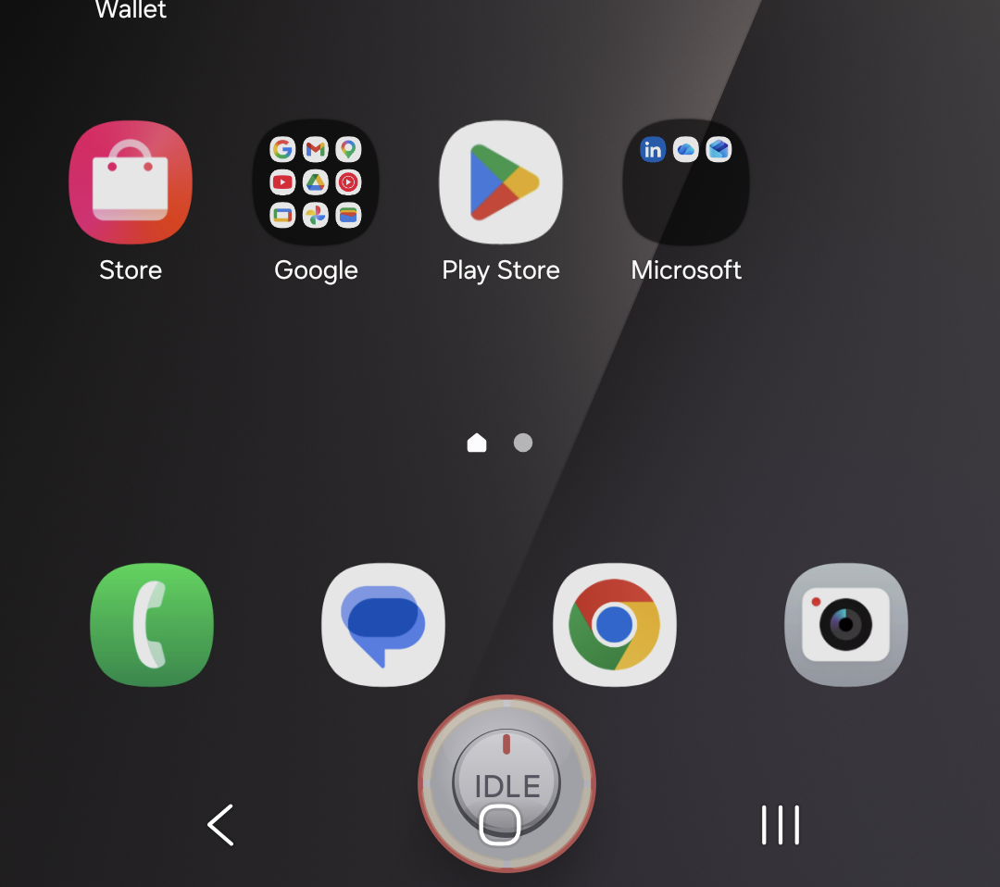

WiM + Lavrentiy
Voice-to-text for people who stutter or speak accented English. A bubble over any app; you end the take; clean text lands where you were typing.
- 35claims, U.S. provisional App. No. 64/100,336, sole inventor
- 4layers: transcribe, reconstruct, personal profile, disfluency
- 11languages for cloud transcription; 5 for the desktop interface
The problem
Dictation tools assume fluent speech. They cut you off on a pause, "fix" a block into the wrong word, and lose the sentence when the app underneath changes focus. For someone with a stutter, an accent, or both, that is every message. I built this for myself first.
My part
Sole designer, developer, and inventor. The Android app, the Windows program, the speech pipeline, the calibration method, and the patent application. I am also the primary test subject: I live with a speech block and a strong accent, and arrived in the United States without English.


Key choices and why
- You end the take.
- No timer. A block or a long pause is not the end of a sentence. The app waits.
- Clarify without touching the app underneath.
- Up to three uncertain words are shown for approval inside the bubble, with the host app's focus, cursor, scroll, keyboard, and selection left exactly where they were. If the write fails, the text is kept, not lost. This is claim 1 of the patent.
- Never send on its own.
- A send-ready countdown disarms instead of firing; the bubble moves onto the app's own Send button and you press it. Password fields are refused outright.
- A disfluency layer with a preservation guard.
- Blocks, part-word repetitions, prolongations, and covert word swaps (the app's name: What I Meant) are reconstructed, while an intended "really really" survives. Delayed auditory feedback is built in.
- Calibration the user confirms.
- On the desktop, a 60-prompt calibration where every transcript is confirmed by the user before it becomes ground truth. Per-person profiles, a local audio archive, covert-stutter detection, first-language transfer packs for nine languages.
What resulted
WiM is in Google Play closed testing (release 1.0.0, October 2026) with pricing live: Free, Cloud $4.99, Cloud Plus $7.99. Lavrentiy v1.7.11 installs on Windows with the speech model inside and works offline. The provisional patent was filed June 27, 2026. Next: the Play testing round, then production.
Proof
- WiM repository (public)
- Lavrentiy installer, ~508 MB, no account
- U.S. provisional App. No. 64/100,336: filing available on request